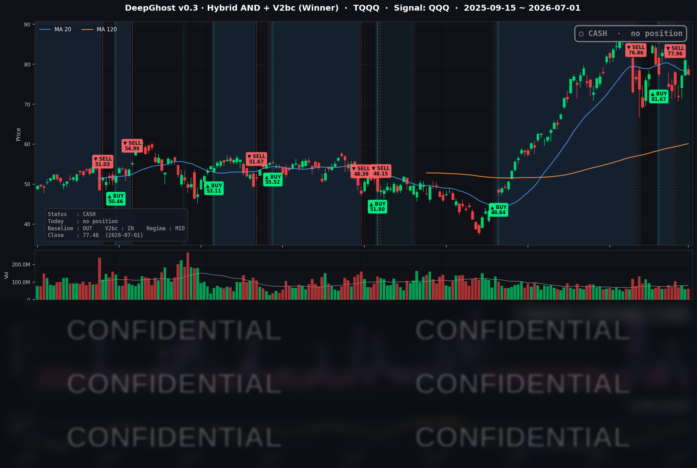

👻 매일 시그널과 히스토리를 홈페이지에서 한눈에 → www.ghostai.co.kr
3분기 첫날, 이틀 연속 오르던 기술주가 반도체 급락에 하루 만에 밀렸습니다. 차익실현 성격이 강하고 크게 의미를 둘 필요는 없습니다. 금리가 오르는게 좀 걱정스럽지만 노이즈 수준입니다. 변동성이 큰 횡보 장세가 이어지고 있으니 시장에서 한발 떨어져서 관찰하시기 바랍니다.
📊 오늘의 매매 신호
| 항목 | 내용 |
|---|---|
| 오늘 할 일 | ✅ 아무것도 안 해도 됩니다 |
| 포지션 상태 | 💵 현금 보유 중 (OUT OF POSITION) |
| 현금 보유 기간 | 2026-06-25 ~ 2026-07-01 (5거래일) |
| TQQQ 종가 | $77.46 (-4.37%) |
6/25 시초가에 TQQQ를 정리해 현금으로 전환한 이후, 새로운 매수·매도 신호 없이 관망을 이어가고 있습니다.
TQQQ 시그널 — OUT OF POSITION
현재 상태: 현금 보유 중 | 신규 매수·매도 신호 없음

3분기 첫 거래일은 기술주 되돌림으로 시작했습니다. 이틀 연속(6/29 +2.49%, 6/30 +1.70%) 오르며 강한 반등을 보였던 나스닥100 추종 QQQ가 오늘은 -1.52% 밀렸고, 3배 레버리지 상품인 TQQQ는 그 배수만큼 확대돼 하루에 -4.37% 하락했습니다.
추세가 다시 또렷해지면 모델은 매수 신호를 낼 것이며, 그 여부는 이번 주 후반 고용지표 결과에서 갈릴 가능성이 큽니다.
오늘 미국 시장 — 시황 요약
지수 마감
| 지수 | 종가 | 등락률 |
|---|---|---|
| S&P 500 | 7,483.23 | -0.22% |
| 나스닥 종합 | 26,040.03 | -0.66% |
| 다우존스 | 52,305.24 | -0.03% |
| 러셀 2000 | 3,012.59 | -0.39% |
지수 표면은 잔잔했지만 속은 요동친 하루였습니다. S&P 500(-0.22%)과 다우(-0.03%)는 소폭 조정에 그친 반면, 나스닥(-0.66%)과 QQQ(-1.52%)만 유독 크게 밀렸습니다. 원인은 지수 상단을 채운 반도체의 집중 매도입니다. 반대로 소프트웨어·플랫폼주가 하방을 방어하면서, "칩은 팔고 소프트웨어는 사는" 로테이션 구도가 오늘 장을 지배했습니다. 강했던 2분기(2020년 이후 최고 분기) 직후 분기 첫날 차익실현이 겹친 흐름입니다.
국채 금리 동향
| 만기 | 수익률 | 전일 대비 |
|---|---|---|
| 3개월 | 3.700% | -4.0bp |
| 5년 | 4.232% | +4.2bp |
| 10년 | 4.475% | +3.5bp |
| 30년 | 4.966% | +5.6bp |
단기물(3개월)은 4bp 내리고 중·장기물이 일제히 3~6bp 올라, 곡선이 조금 더 가팔라졌습니다(베어 스티프닝). 10년물-3개월물 스프레드는 +77.5bp로 정상적인 우상향 곡선을 유지해 경기 침체 신호는 없습니다. 장기 금리 상승은 고밸류 성장주·반도체의 할인율 부담으로 작용하며 나스닥 약세와 결이 맞습니다. 다만 상승 폭 자체(3~6bp)는 크지 않아, 오늘 하락의 주범이라기보다 배경 압력 수준입니다.
연준 발언 & 금리 패스
신임 Warsh 연준 의장이 유럽중앙은행(ECB) 포럼(포르투갈 신트라)에서 국제무대 데뷔 발언을 했습니다. 톤은 매파적이었습니다. "인플레이션은 여전히 너무 높다"며 2% 물가 목표 달성 의지를 재확인했고, 조기 금리 인하는 사실상 배제했습니다. 트럼프 행정부의 금리 인하 압박에는 "연준은 오랫동안 독립적이었고 앞으로도 그렇다"며 독립성을 강조했습니다. 종합하면 "물가 안정 최우선, 데이터가 유의미하게 악화되지 않는 한 즉각적 인하는 없다"는 기조로, 장기 금리 상승·성장주 부담과 정합적입니다.
오늘의 핵심 이슈
- 메모리·반도체 "재료 소멸(sell-the-news)". 마이크론(MU)이 기록적 실적을 냈는데도 -10.57% 급락했습니다. 좋은 뉴스가 이미 가격에 반영돼 있었다는 신호에, AI 메모리 수요 지속성 우려와 저가 중국산 DRAM 이슈까지 겹쳤습니다. 인텔(INTC)도 -9.03%로 랠리 후 차익실현이 나왔습니다.
- 메타(META) +8.81% 급등. 잉여 AI 컴퓨팅 자원을 상업화하는 'Meta Compute' 클라우드 사업 진출 보도가 촉매였습니다. 커뮤니케이션 섹터가 지수 하방을 방어했습니다.
- 매파 연준 + 분기 첫날 리스크오프. 2020년 이후 최고 분기를 마감한 직후 차익실현이 나왔고, 6월 ISM 제조업 지표(53.3, 예상 53.9 하회)로 매크로 모멘텀도 소폭 둔화됐습니다.
변동성 & 투자심리
- VIX(변동성 지수): 16.59, 전일 대비 +0.85%. 절대 수준은 여전히 낮아 "시장 전체의 공포"는 없습니다. 지수 표면 조정에도 시스템적 불안은 부재한 상태입니다.
- 공포탐욕지수: 32(공포). 낮은 VIX와 달리 심리는 방어적입니다.
지수 표면은 잔잔하고 VIX도 낮은데(패닉 아님), 그 안에서 반도체는 -9~-11%로 급락하고 심리지표는 공포에 머물러 있습니다. "잔잔한 수면 아래 급류"가 흐르는, 겉과 속의 온도차가 뚜렷한 국면입니다.
매크로 & 원자재
- WTI 유가: $68.00 (-2.16%) — 위험회피·경기 둔화 우려에 68달러선으로 하락.
- Brent 유가: $71.20 (-2.36%).
- 금: $4,050.20 (+0.68%) — 안전자산 선호로 소폭 상승.
유가는 내리고 금은 오른 조합입니다. 위험회피 심리가 원유를 누르고 자금 일부가 금으로 이동한 흐름으로, 오늘 장의 방어적 성격과 맞물립니다.
주요 종목 동향
| 종목 | 전일 종가 | 당일 종가 | 등락률 | 비고 |
|---|---|---|---|---|
| MU | 1,154.29 | 1,032.28 | -10.57% | 기록적 실적에도 재료 소멸·AI 메모리 지속성 우려·저가 DRAM 이슈로 급락 |
| INTC | 139.63 | 127.02 | -9.03% | 급등 랠리 후 파운드리·밸류 우려에 차익실현, 7/23 실적이 다음 촉매 |
| AVGO | 377.75 | 369.34 | -2.23% | 반도체 섹터 전반 매도에 동반 약세 |
| QCOM | 184.79 | 181.92 | -1.55% | 반도체 로테이션에서 밀려남 |
| NVDA | 200.09 | 197.58 | -1.25% | 칩 차익실현 속 상대적 선방 |
| GOOGL | 357.37 | 361.21 | +1.07% | 대형 플랫폼 강세 동참 |
| TSLA | 420.60 | 425.30 | +1.12% | 성장주 중 상대 강세 |
| AMZN | 238.34 | 241.70 | +1.41% | 클라우드·플랫폼 강세 |
| AAPL | 289.36 | 294.38 | +1.73% | 메가캡 방어 흐름 |
| MSFT | 373.02 | 384.28 | +3.02% | 소프트웨어·AI 클라우드 강세 주도 |
| NFLX | 71.40 | 74.19 | +3.91% | 커뮤니케이션 섹터 강세 동참 |
| META | 563.29 | 612.91 | +8.81% | 'Meta Compute' AI 클라우드 진출 보도로 급등, 지수 하방 방어 |
오늘의 주인공은 반도체 급락이었습니다. 마이크론(-10.57%)과 인텔(-9.03%)이 나스닥을 끌어내렸는데, 마이크론은 기록적 실적을 발표하고도 떨어진 전형적인 "재료 소멸"이었습니다. 반대편에서는 메타(+8.81%)가 AI 클라우드 진출 보도로 급등했고, MSFT(+3.02%)·넷플릭스(+3.91%)가 하방을 방어했습니다. "칩은 팔고 소프트웨어·플랫폼은 사는" 로테이션이 지수 전체의 낙폭을 제한한 하루였습니다.
Ghost.AI — Quantitative AI Investment
Model: DeepGhost v0.3 | Transformer-Based Deep Learning
Coverage: 13 tickers | Updated every trading day after US market close
⚠️ 본 자료는 정보 제공 목적으로만 작성되었으며 투자 권유가 아닙니다. 모든 투자의 책임은 투자자 본인에게 있습니다. 과거 성과가 미래 수익을 보장하지 않습니다.
[유의사항]
- 본 서비스는 불특정 다수를 대상으로 발행되는 단방향 정보 제공 서비스이며, 투자자 개인의 재산 상황·투자 목적·위험 선호도를 반영한 개별 투자 조언이 아닙니다.
- 고스트에이아이 주식회사는 고객과 쌍방향 의사소통(개별 상담, 맞춤형 자문 등)을 제공하지 않습니다.
- 본 콘텐츠는 투자 권유 또는 매매 주문의 청약·청약의 권유에 해당하지 않으며, 최종 투자 판단 및 그에 따른 손익의 책임은 전적으로 투자자 본인에게 있습니다.
고스트에이아이 주식회사